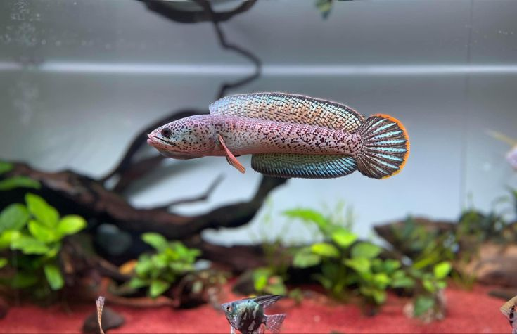

Channa Barca

Ikan gabus Barca ( Channa barca ) merupakan spesies ikan gabus yang langka . Burung ini endemik
di hulu sungai Brahmaputra di timur laut India dan Bangladesh . [2] [3] Catatan dari Nepal
diragukan validitasnya. [1] Secara keseluruhan, hewan ini dinilai kekurangan data oleh IUCN , [1]
dan pada tahun 2014 dinilai sebagai spesies yang sangat terancam punah di Bangladesh oleh IUCN.
[3] Di Assam, secara lokal dikenal sebagai cheng garaka ataugaraka cheng .
Ini adalah ikan gabus yang relatif besar, mencapai panjang total hingga 105 cm (3,4 kaki). [2]
Spesies ini dianggap sebagai ikan makanan yang sangat baik , [2] dan juga sangat diinginkan oleh
aquarists, namun kelangkaan, perilaku dan ukurannya yang besar membuatnya tidak cocok untuk
sebagian besar akuarium. [4]
Ikan gabus barca hanya diketahui dari hulu sungai Brahmaputra di Assam dan Nagaland di India, [1]
dan Sylhet di Bangladesh. [3] Catatan dari Nepal diragukan validitasnya. [1] Ia kebanyakan
mendiami lahan basah, seringkali di dekat pinggiran sungai, namun juga dapat dilihat di habitat
tepi sungai. [5] [6] Ia mampu menahan variasi suhu air dan tingkat oksigen yang besar karena
habitatnya mengalami perubahan musiman yang besar pada tingkat banjir. [5] Ia sering menghuni
terowongan vertikal yang panjangnya sekitar satu meter (3,3 kaki) dan turun ke permukaan air..
Terowongan itu berakhir di sebuah ruangan tempat ikan menghabiskan musim kemarau ketika
lahan basah di atasnya menghilang. [4] Beberapa ikan gabus lain yang menghuni wilayah umum
yang sama dengan ikan gabus juga dilaporkan " hibernasi " selama musim kemarau, termasuk ikan
gabus berbintik oranye ( C. aurantimaculata ) yang berkerabat dekat. [7] Status konservasi
keseluruhan ikan gabus kurang diketahui, namun secara umum tampaknya spesies ini langka atau
langka. [1] [4]
Spesies ini sangat karnivora, [8] kebanyakan memakan ikan. [5] Sedikit yang diketahui tentang
perilaku berkembang biaknya, tetapi seperti kerabat terdekatnya, kemungkinan besar hewan ini
adalah penggerek mulut . [4] Kedewasaan dapat terjadi ketika panjangnya hanya 12,5 cm (5 inci),
namun kebanyakan individu berukuran sekitar dua atau tiga kali lipat sebelum mereka
mencapainya. [5] Musim kawin berlangsung lama dan dimulai ketika lebah yang mereka tinggali
tergenang air akibat hujan pra- monsun pada bulan April-Mei. Spesies ini memiliki kesuburan
yang rendah dan kedua orang tuanya merawat anak-anaknya. [5]